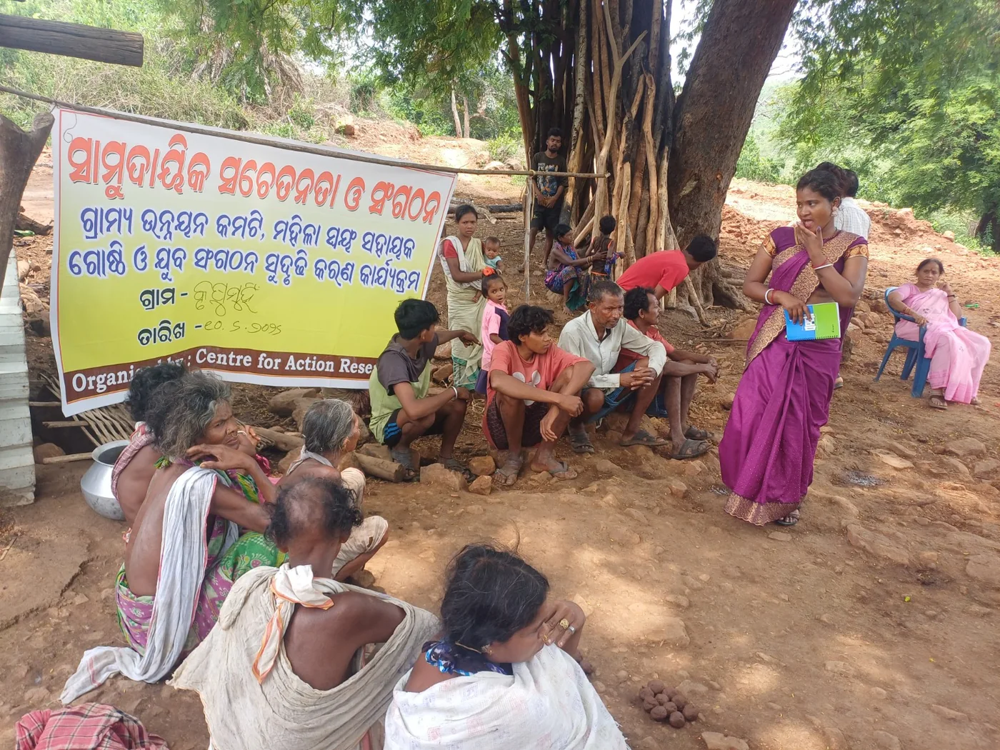

Human Resource Policy
Framework for roles, responsibilities and employment practices.
Request the current approved copy.Responsible governance, clear policies, accurate statutory information and honest reporting are essential to community trust and credible partnerships.

Framework for roles, responsibilities and employment practices.
Request the current approved copy.Framework for accounting, financial controls and the handling of resources.
Request the current approved copy.Safeguards and procedures for preventing and responding to sexual harassment.
Request the current approved copy.Framework for purchasing, selection and procurement-related decisions.
Request the current approved copy.Commitments and practices relating to gender equality and participation.
Request the current approved copy.Centre for Action Research is registered as a public trust under the Indian Trust Act, 1882. The registration with the Sub-Registrar, Khandagiri, on 7 December 2016; Document No. 41131609118; Book No. 4; Volume 183.
Registration / approval number: AACTC0432C25HY01. Form 10AD order dated 28 January 2026 grants registration under Section 12AB(1)(b) for assessment years 2027–28 to 2036–37.
Approval number: AACTC0432C26HY01. Form 10AD order dated 2 September 2026 covers assessment years 2027–28 to 2031–32. The order states that continued 80G validity depends on valid Section 12A/12AB registration for the relevant period.
Unique ID: OR/2018/0187048.
CSR Registration Number: CSR00046906, under the Office of the Registrar of Companies, Government of India.
The original Form 10AD orders are available here as PDFs.
Registration under Section 12AB(1)(b)
Download 12AB order (PDF) ↓Approval for eligible donations, subject to order conditions
Download 80G order (PDF) ↓